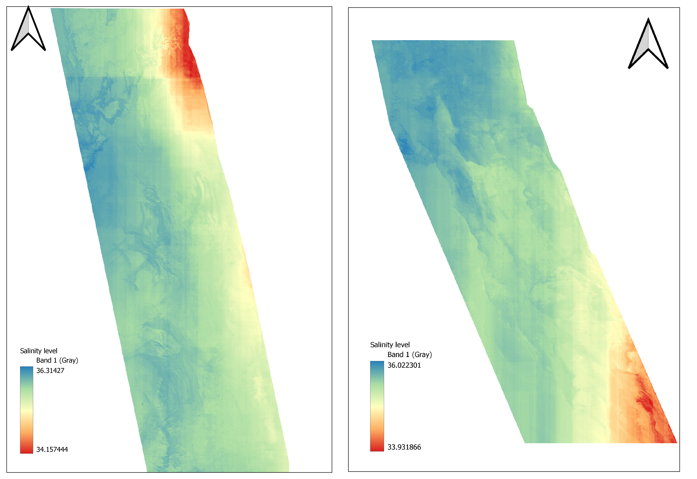

Salinity is an important factor in determining many aspects of the chemistry of natural
waters and of biological processes within it, and is a thermodynamic state variable that,
along with temperature and pressure, governs physical characteristics like the density and
heat capacity of the water.
Sample images of predicted salinity with different ranges are shown below:

Check out the demo video of the results:
We have used the Scikit-learn framework which has different packages. We have used certain packages like
Train_test_split - This module is used to split the dataset into training and testing datasets
LinearRegression - This module is used to study the relationship between a dependent variable (Y) with a given set of independent variables (X).
Metrics - This module implements mean square error, mean absolute error, root mean squared error and Coefficient of determination
StandardScaler- This module helps to standardize a feature by subtracting the mean and then scaling to unit variance
PCA - This module simplifies the complexity in high-dimensional data while retaining trends and patterns.
RandomForestRegressor - This module is used as a meta estimator that fits a number of decision tree classifiers on various sub-samples of the
dataset and uses averaging to improve the predictive accuracy and control over-fitting.
We have used the following Machine Learning models to predict salinity:
Multiple linear regression (MLR)
Random Forest (RF)
Random Forest with Principal component analysis (RF with PCA).